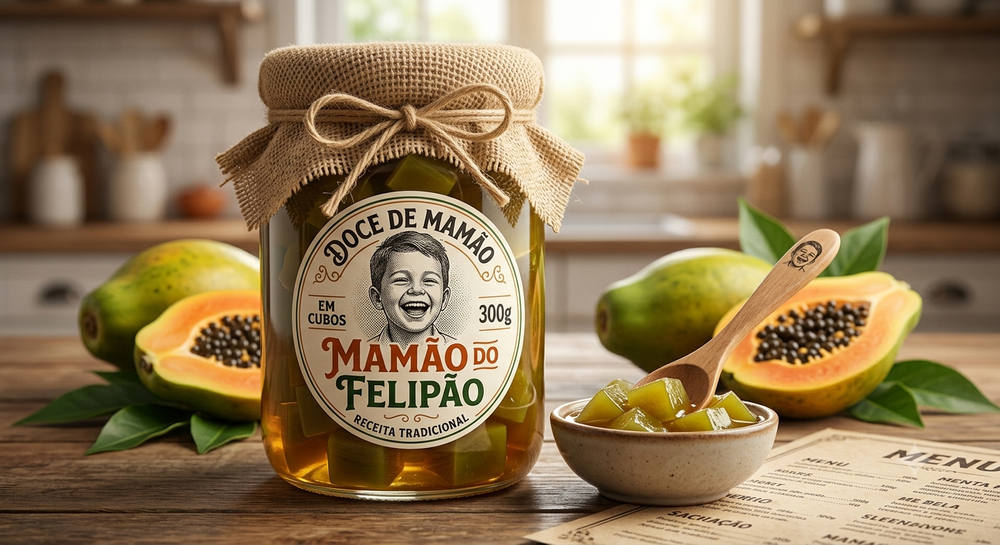

Sabor que vem do Sorriso.
Transformamos a energia contagiante do Felipão em uma linha de doces artesanais que preserva a tradição mineira com um toque moderno e carinhoso.
Design do Logo
Capturando a Essência do Felipão
O conceito visual da marca foi extraído diretamente das fotos de referência. O objetivo foi criar uma "mascote-logotipo" que utilize os traços marcantes do Felipão: o sorriso largo, as bochechas expressivas e o corte de cabelo moderno.
- 1 O Sorriso: Traduzido em linhas curvas que lembram a fatia de um mamão maduro.
- 2 O Cabelo: Estilizado em tons de marrom cacau para criar contraste com o laranja vibrante.

Esboço conceitual: Traços do rosto do Felipão integrados à forma orgânica da fruta.